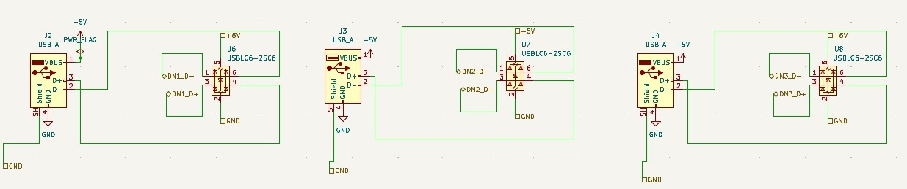

USB Output Port Configuration & Protection
Function: Physical USB port implementation with power switching and protection
Purpose: Provides safe, controlled power and data connections for downstream USB devices
Components: USB connectors, power switches, protection circuits, ESD protection

Figure 1: Downstream USB port circuits with individual power control and protection
Connector Type: USB 3.0 Type-A female (9-pin)
Data Support: USB 3.0 SuperSpeed (5 Gbps) + USB 2.0 fallback
Power Capability: 5V @ 1.5A per port (max)
From Hub Controller Module:
From Power Management Module:
To External Devices: